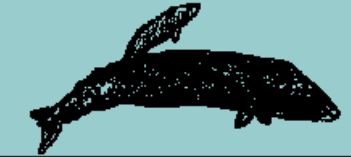

The Southern Calving Grounds
The waters of the northern Mexico lagoons are shallow and calm. (A "lagoon" is a large, shallow bay or body of water separated from the sea.) California gray whales gather in the lagoons to give birth. They provide a safe nursery for newborn whales just learning to breathe and swim.
Also, the water in the lagoon is saltier than in the open ocean. The saltier water makes it easier for the newborn calf to float. The warmth of the water is important too. The calf does not yet have a thick layer of blubber to keep it warm.
Most of the lagoons are on the Baja California coast though whales also frequent Yavaros Lagoon in Sonora. The land surrounding the lagoons tends to be dry with small human populations. These conditions reduce human impact on the whales.
That said, there is development pressure. Salt plants and tourism pose a challenge. The United Nations and conservation groups are working hard to protect these sites.
The most famous of the shallow lagoons used by gray whales is Scammon's Lagoon, also known as Laguna Ojo de Liebre. The lagoon is named for a 19th century whaling captain, Charles Scammon, Whose discovery of their winter breeding grounds opened up one of the worst periods of slaughter in whaling history. Whales then took over the lagoons, often trapping the calves to attract and kill the frantic mother whales. The whales were driven to the edge of extinction.
